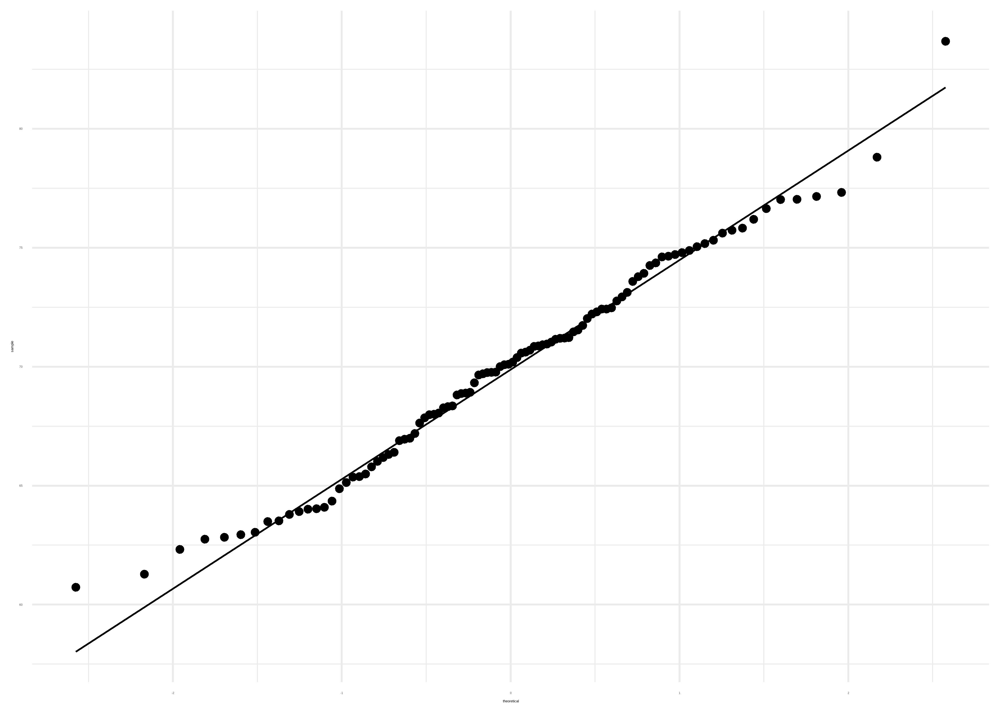
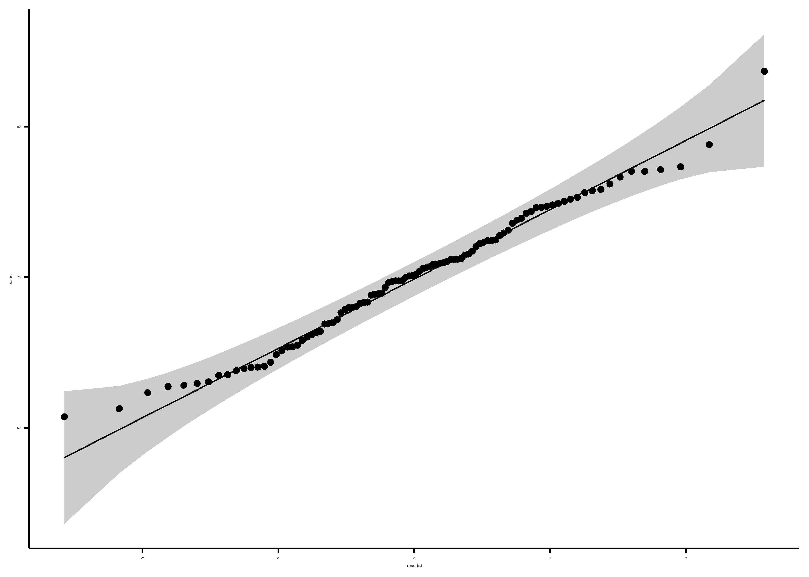
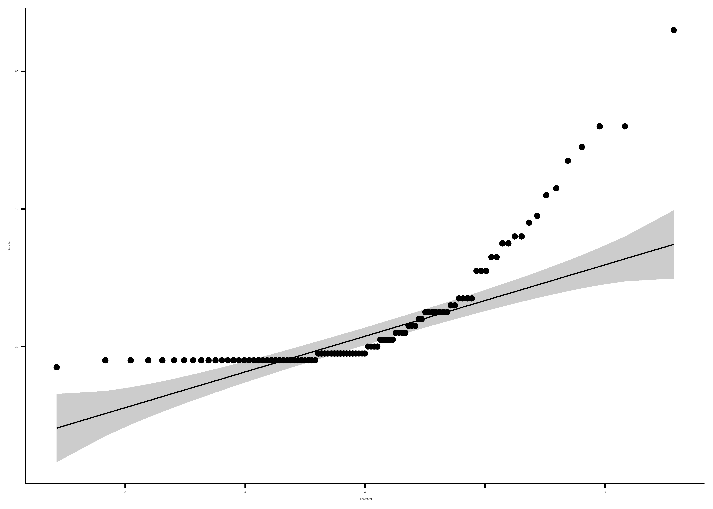
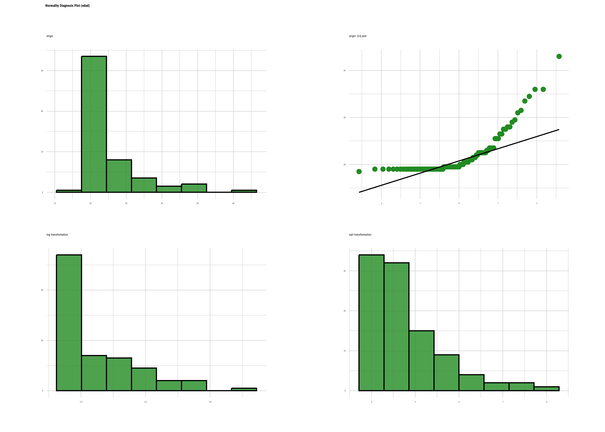
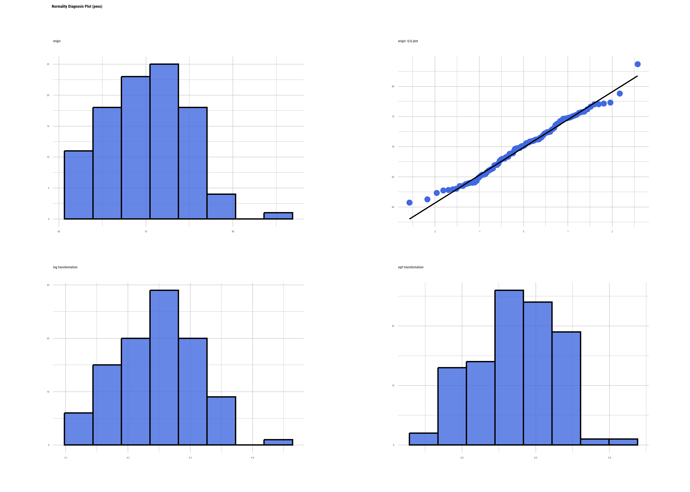
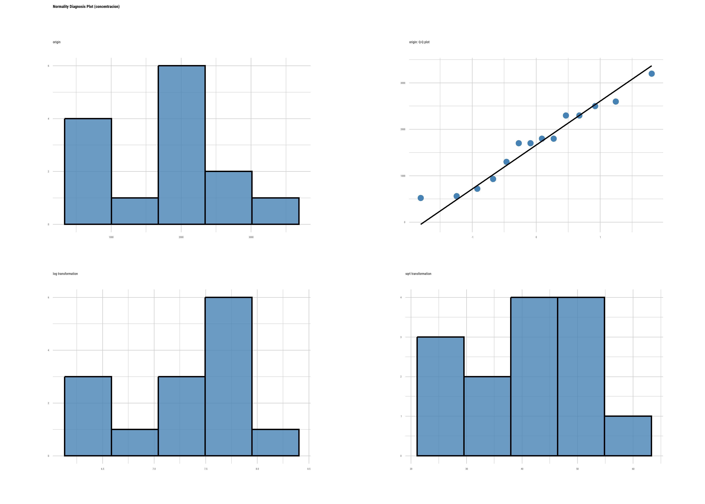

Análisis de normalidad y homocedasticidad
Christian Ballejo ![]()
Introducción
Este material es una continuación del capítulo sobre Análisis exploratorio de datos de la Unidad 1. Recordemos que uno de los objetivos del EDA es conocer cómo se distribuyen los valores de las variables de interés.
Las características fundamentales a la hora de decidir si utilizaremos métodos paramétricos o no paramétricos para la inferencia estadística, es que los datos se ajusten a una distribución normal y conocer si tienen una dispersión homogénea o heterogénea. Ahora que conocemos el funcionamiento interno de los test de hipótesis, podemos usar pruebas de bondad de ajuste para evaluar los supuestos de normalidad y homocedasticidad.
Normalidad
Determinar que una distribución es aproximadamente normal nos permite decidirnos por test de comparaciones paramétricos.
Existen tres enfoques que debemos analizar simultáneamente:
- Métodos gráficos
- Métodos analíticos
- Pruebas de bondad de ajuste
Métodos gráficos
El gráfico por excelencia para evaluar normalidad es el Q-Q Plot que consiste en comparar los cuantiles de la distribución observada con los cuantiles teóricos de una distribución normal con la misma media y desviación estándar que los datos.
Cuanto más se aproximen los datos a una normal, más alineados están los puntos entorno a la recta.
En el lenguaje R hay varios paquetes que tienen funciones para construirlos:
Cargamos datos de ejemplo:
datos <- read_csv2("datos/datos_normalidad.csv")Evaluación gráfica de normalidad usando la función plot_normality() del paquete dlookr:
datos |>
plot_normality(peso) 
A simple vista observamos que los puntos de la variable peso se ajustan bastante bien a la recta.
También podemos generar el qqplot usando las funciones geom_qq_line() y geom_qq() de ggplot2:
datos |>
ggplot(mapping = aes(sample = peso)) +
geom_qq_line() +
geom_qq() +
theme_minimal()
La función ggqqplot() del paquete ggpubr (Kassambara 2023) nos permite agregar intervalos de confianza (zona gris alrededor de la recta) que nos orienta mejor sobre “donde caen” los puntos de la variable analizada:
datos$peso |>
ggqqplot()
Un ejemplo donde la variable parece no cumplir con el suspuesto de normalidad en estos datos de prueba es edad:
datos$edad |>
ggqqplot()
Métodos analíticos
Medidas de forma
Existen dos medidas de forma útiles que podemos calcular mediante funciones de R.
- La curtosis (kurtosis)
- La asimetría (skewness)
La curtosis mide el grado de agudeza o achatamiento de una distribución con relación a la distribución normal.
- < 0 Distribución platicúrtica (apuntamiento negativo): baja concentración de valores
- > 0 Distribución leptocúrtica (apuntamiento positivo): gran concentración de valores
- = 0 Distribución mesocúrtica (apuntamiento normal): concentración como en la distribución normal.
El paquete moments (Komsta y Novomestky 2022) posee algunas funciones interesantes para analizar medidas de forma, como el estimador de Pearson para curtosis:
datos |>
summarise(kurtosis_edad = kurtosis(edad, na.rm = T),
kurtosis_peso = kurtosis(peso, na.rm = T))# A tibble: 1 × 2
kurtosis_edad kurtosis_peso
<dbl> <dbl>
1 8.05 2.72En los dos casos estamos frente a una distribución leptocúrtica pero de magnitudes bien diferentes. Muy alta en el caso de la variable edad (8,0) y mucho menor para la variable peso (2,7).
El índice de asimetría es un indicador que permite establecer el grado de asimetría que presenta una distribución. Los valores menores que 0 indican distribución asimétrica negativa; los mayores a 0: distribución asimetrica positiva y cuando sea 0, o muy próximo a 0, distribución simétrica:
datos |>
summarise(asimetria_edad = skewness(edad, na.rm = T),
asimetria_peso = skewness(peso, na.rm = T))# A tibble: 1 × 2
asimetria_edad asimetria_peso
<dbl> <dbl>
1 2.19 0.122Los valores obtenidos con la función skewness() del paquete moments nos informan que la distribución de la edad tienen una asimetría positiva (2,2) y que los valores de peso se distribuyen bastante simétricos (0,1).
Estas características de las distribuciones también se pueden ver mediante histogramas o gráficos de densidad:
datos |>
plot_normality(edad, col = "forestgreen") 
datos |>
plot_normality(peso, col = "royalblue") 
Los histogramas que se acerquen a la clásica “campana de Gauss” tendrán curtosis y asimetrías alrededor del valor cero.
Pruebas de bondad de ajuste
Una prueba de bondad de ajuste permite testear la hipótesis de que una variable aleatoria sigue cierta distribución de probabilidad y se utiliza en situaciones donde se requiere comparar una distribución observada con una teórica o hipotética.
El mecanismo es idéntico a cualquier test de hipótesis salvo que aquí esperamos no descartar la hipótesis nula de igualdad, por lo que obtener valores p de probabilidad mayores a 0,05 es signo de que la distribución de la variable analizada se ajusta.
A continuación, presentaremos los test de hipótesis más utilizados para analizar normalidad.
Test de Shapiro-Wilk
Lleva el nombre de sus autores (Samuel Shapiro y Martin Wilk) y es usado preferentemente para muestras de hasta 50 observaciones.
La función se encuentra desarrollada en el paquete stats y se llama shapiro.test():
shapiro.test(datos$edad)
Shapiro-Wilk normality test
data: datos$edad
W = 0.69517, p-value = 4.912e-13shapiro.test(datos$peso)
Shapiro-Wilk normality test
data: datos$peso
W = 0.98615, p-value = 0.383Interpretación: Siendo la hipótesis nula que la población está distribuida normalmente, si el p-valor es menor a \(\alpha\) (nivel de significancia, convencionalmente un 0,05) entonces la hipótesis nula es rechazada (se concluye que los datos no provienen de una distribución normal). Si el p-valor es mayor a \(\alpha\), se concluye que no se puede rechazar dicha hipótesis.
En función de esta interpretación (que es común a todos los test de hipótesis de normalidad), podemos decir que la distribución de la variable edad no se ajusta a la normal y no podemos rechazar que la distribución de la variable peso se ajuste.
Test de Kolmogorov-Smirnov
El test de Kolmogorov-Smirnov permite estudiar si una muestra procede de una población con una determinada distribución que no está limitado únicamente a la distribución normal.
El test asume que se conoce la media y varianza poblacional, lo que en la mayoría de los casos no es posible. Para resolver este problema, se realizó una modificación conocida como test Lilliefors.
Test de Lilliefors
El test de Lilliefors asume que la media y varianza son desconocidas y está especialmente desarrollado para contrastar la normalidad.
Es la alternativa al test de Shapiro-Wilk cuando el número de observaciones es mayor de 50.
La función lillie.test() del paquete nortest (Gross y Ligges 2015) permite aplicarlo:
lillie.test(datos$edad)
Lilliefors (Kolmogorov-Smirnov) normality test
data: datos$edad
D = 0.24892, p-value < 2.2e-16lillie.test(datos$peso)
Lilliefors (Kolmogorov-Smirnov) normality test
data: datos$peso
D = 0.049534, p-value = 0.7905Los resultados son coincidentes con los obtenidos anteriormente.
Test de D’agostino
Esta prueba se basa en las transformaciones de la curtosis y la asimetría de la muestra, y solo tiene poder frente a las alternativas de que la distribución sea sesgada.
El paquete moments la tiene implementada en agostino.test():
agostino.test(datos$edad)
D'Agostino skewness test
data: datos$edad
skew = 2.1947, z = 6.3465, p-value = 2.203e-10
alternative hypothesis: data have a skewnessagostino.test(datos$peso)
D'Agostino skewness test
data: datos$peso
skew = 0.12160, z = 0.52683, p-value = 0.5983
alternative hypothesis: data have a skewnessLos resultados coinciden con la observación de asimetría que efectuamos con los métodos analíticos, confirmando que la variable edad no se ajusta a una curva simétrica y la variable peso si lo hace.
Cuando estos test se emplean con la finalidad de verificar las condiciones de métodos paramétricos es importante tener en cuenta que, al tratarse de valores probabilidad, cuanto mayor sea el tamaño de la muestra más poder estadístico tienen y más fácil es encontrar evidencias en contra de la hipótesis nula de normalidad.
Por otra parte, cuanto mayor sea el tamaño de la muestra, menos sensibles son los métodos paramétricos a la falta de normalidad. Por esta razón, es importante no basar las conclusiones únicamente en los resultados de los test, sino también considerar los otros métodos (gráfico y analítico) y no olvidar el tamaño de la muestra.
Homocedasticidad
La homogeneidad de varianzas es un supuesto que considera constante la varianza en los distintos grupos que queremos comparar.
Esta homogeneidad es condición necesaria antes de aplicar algunos test de hipótesis de comparaciones o bien para aplicar correcciones mediante los argumentos de las funciones de R.
Existen diferentes test de bondad de ajuste que permiten evaluar la distribución de la varianza. Todos ellos consideran como \(H_0\) que la varianza es igual entre los grupos y como \(H_1\) que no lo es.
La diferencia entre ellos es el estadístico de centralidad que utilizan:
Media de la varianza: son los más potentes pero se aplican en distribuciones que se aproximan a la normal.
Mediana de la varianza: son menos potentes pero consiguen mejores resultados en distribuciones asimétricas.
F-test
Este test es un contraste de la razón de varianzas, mediante el estadístico F que sigue una distribución F-Snedecor.
Se utiliza cuando las distribuciones se aproximan a la “normal” y en R base se la encuentra en la función var.test() que permite utilizar la sintaxis de fórmula:
variable_cuantitativa ~ variable_categórica_gruposPor ejemplo:
var.test(formula = peso ~ sexo, data = datos)
F test to compare two variances
data: peso by sexo
F = 0.67914, num df = 50, denom df = 48, p-value = 0.1781
alternative hypothesis: true ratio of variances is not equal to 1
95 percent confidence interval:
0.384712 1.194943
sample estimates:
ratio of variances
0.6791414 Comparamos las varianzas de la variable peso entre el grupo de mujeres y hombres. El valor \(p\) del test indica que no podemos descartar la igualdad de varianzas entre los grupos (\(H_0\)) o lo que es lo mismo el test no encuentra diferencias significativas entre las varianzas de los dos grupos.
Test de Bartlett
Este test se puede utilizar como alternativa al F-test, sobre todo porque nos permite aplicarlo cuando tenemos más de 2 grupos de comparación. Al igual que el anterior es sensible a las desviaciones de la normalidad.
La función en R base es bartlett.test() y también se pueden usar argumentos tipo fórmula:
bartlett.test(formula = peso ~ sexo, data = datos)
Bartlett test of homogeneity of variances
data: peso by sexo
Bartlett's K-squared = 1.8082, df = 1, p-value = 0.1787El resultado es coincidente con el mostrado por var.test(). No se encuentran diferencias significativas entres las varianzas de los pesos en los dos grupos (Mujer - Varon)
Test de Levene
El test de Levene sirve para comparar la varianza de 2 o más grupos pero además permite elegir distintos estadísticos de tendencia central. Por lo tanto, la podemos adaptar a distribuciones alejadas de la normalidad seleccionando por ejemplo la mediana.
La función leveneTest() se encuentra disponible en el paquete car. La vemos aplicada sobre peso para los diferentes grupos de sexo y utilizando la media como estadístico de centralidad, dado que la distribución de peso se aproxima a la normal.
leveneTest(y = peso ~ sexo, data = datos, center = "mean")Levene's Test for Homogeneity of Variance (center = "mean")
Df F value Pr(>F)
group 1 2 0.1605
98 La conclusión es la misma que la encontrada anteriormente.
Ahora vamos aplicarla sobre la variable edad, de la que habíamos descartado “normalidad”. Lo hacemos usando el argumento center con "mean" (media) y con "median" (mediana).
leveneTest(y = edad ~ sexo, data = datos, center = "mean")Levene's Test for Homogeneity of Variance (center = "mean")
Df F value Pr(>F)
group 1 4.6784 0.033 *
97
---
Signif. codes: 0 '***' 0.001 '**' 0.01 '*' 0.05 '.' 0.1 ' ' 1leveneTest(y = edad ~ sexo, data = datos, center = "median")Levene's Test for Homogeneity of Variance (center = "median")
Df F value Pr(>F)
group 1 2.4413 0.1214
97 Los resultados son diferentes. Mientras con el centrado en la media nos da un p valor significativo menor a 0,05 con el centrado en la mediana no nos permite descartar homocedasticidad.
Observamos aquí las distorsiones sobre la media y las formas paramétricas que devienen de distribuciones asimétricas y alejadas de la curva normal. El código correcto para este caso (variable edad) es usar el centrado en la mediana (center = "median").
Ejemplo práctico en R
Los difenilos policlorados (PCB) son una clase de contaminantes ambientales con efectos adversos en la salud humana. Se ha asociado su exposición intrauterina con deterioro cognitivo en niños, y se encuentran entre los contaminantes más abundantes en el tejido graso humano.
Un estudio realizado por Tu Binh Minh y colaboradores en la Universidad Nacional de Vietnam analizó la concentración de PCB en la grasa de un grupo de 14 adultos. Los valores de PCB hallados en las personas estudiadas se encuentran almacenadas en el archivo “PCB.txt“ y se nos pide realizar los siguientes items:
- Leer el archivo y explorar su contenido.
- Describir estadísticamente las mediciones.
- Evaluar si los datos provienen de una distribución normal.
- Calcular los intervalos de confianza (IC) del 90% y 95% para la media de la concentración de PCB.
Veamos como llevamos adelante estos pasos mediante el lenguaje R:
Lectura y exploración de datos
Carga de paquetes:
Carga de datos:
datos <- read_csv2("datos/PCB.txt")Visualizamos la estructura de la tabla de datos:
glimpse(datos)Rows: 14
Columns: 2
$ individuo <dbl> 1, 2, 3, 4, 5, 6, 7, 8, 9, 10, 11, 12, 13, 14
$ concentracion <dbl> 930, 2300, 2300, 1700, 720, 2500, 560, 1800, 1800, 2600,…Tenemos una tabla con 14 observaciones (mediciones en individuos) y la variable de interés se llama concentracion (nos informan que está expresada como nanogramo de PCB/gramo de lípido)
Estadísticos descriptivos
Con la función describe() de dlookr podemos obtener los estadísticos de esta variable cuantitativa continua:
datos |>
describe(concentracion)# A tibble: 1 × 26
described_variables n na mean sd se_mean IQR skewness kurtosis
<chr> <int> <int> <dbl> <dbl> <dbl> <dbl> <dbl> <dbl>
1 concentracion 14 0 1709. 825. 220. 1278. 0.0348 -0.852
# ℹ 17 more variables: p00 <dbl>, p01 <dbl>, p05 <dbl>, p10 <dbl>, p20 <dbl>,
# p25 <dbl>, p30 <dbl>, p40 <dbl>, p50 <dbl>, p60 <dbl>, p70 <dbl>,
# p75 <dbl>, p80 <dbl>, p90 <dbl>, p95 <dbl>, p99 <dbl>, p100 <dbl>La media (1709,29 ng/g) y la mediana (1750,0 ng/g) son cercanas. El desvío estandar es de 824,81 ng/g.
Evaluación de normalidad
Para verificar si los datos siguen una distribución normal, aplicamos el test de Shapiro-Wilk y visualizamos un gráfico de normalidad:
shapiro.test(datos$concentracion)
Shapiro-Wilk normality test
data: datos$concentracion
W = 0.95246, p-value = 0.5996Un p-valor mayor a 0,05 habla de un ajuste a la curva normal.
datos |>
plot_normality(concentracion)
Si bien son pocos datos, el p-valor > 0.05 y el gráfico no muestra una desviación evidente, por lo que asumimos que los datos siguen una distribución normal y podemos usar métodos paramétricos.
Cálculo del intervalo de confianza (IC)
Estamos frente al calculo de IC de una muestra de 14 observaciones (menor a 30 observaciones) y que cumple con el supuesto de normalidad, por lo tanto debemos aplicar un método paramétrico basado en la distribución \(t\) de Student.
La distribución\(t\) es similar a la normal, con la media y la varianza como parámetros, pero ajusta sus colas según el tamaño muestral mediante los grados de libertad (n-1). Para muestras pequeñas, esto mejora la precisión de los intervalos de confianza.
En la practica, cuando trabajamos sobre inferencia de la media (para IC o para pruebas de hipótesis para comparar) y el tamaño muestral es mayor a 30 igualmente se hace con la distribución \(t\) de Student, dado que con 30 o más grados de libertad es prácticamente igual a una distribución normal.
La función t.test(), incluída en el paquete stats de R, sirve apara ejecutar test de hipótesis de medias de una y dos poblaciones (independientes o pareadas) pero además nos calcula automáticamente el intervalo de confianza requerido, basado en la distribución \(t\) de Student.
Para este ejemplo debemos utilizar como argumentos:
- la variable de interés que contiene los valores de la muestra
- el nivel de confianza con el que necesitamos el IC
t.test(x = datos$concentracion,
conf.level = 0.95)
One Sample t-test
data: datos$concentracion
t = 7.754, df = 13, p-value = 3.143e-06
alternative hypothesis: true mean is not equal to 0
95 percent confidence interval:
1233.053 2185.518
sample estimates:
mean of x
1709.286 En la lista de resultados devuelta debemos observar los valores que figuran debajo de "95 percent confidence interval:“. En este caso, el resultado es de una media de 1709,3 (IC 95%: 1233,0-2185,5 ng/g).
Si cambiamos el argumento conf.level a 0.90 obtendremos el IC 90%:
t.test(x = datos$concentracion,
conf.level = 0.90)
One Sample t-test
data: datos$concentracion
t = 7.754, df = 13, p-value = 3.143e-06
alternative hypothesis: true mean is not equal to 0
90 percent confidence interval:
1318.901 2099.671
sample estimates:
mean of x
1709.286 Este va de 1318,9 a 2099,7 ng/g, lógicamente más estrecho que el anterior porque redujimos el intervalo de confianza.